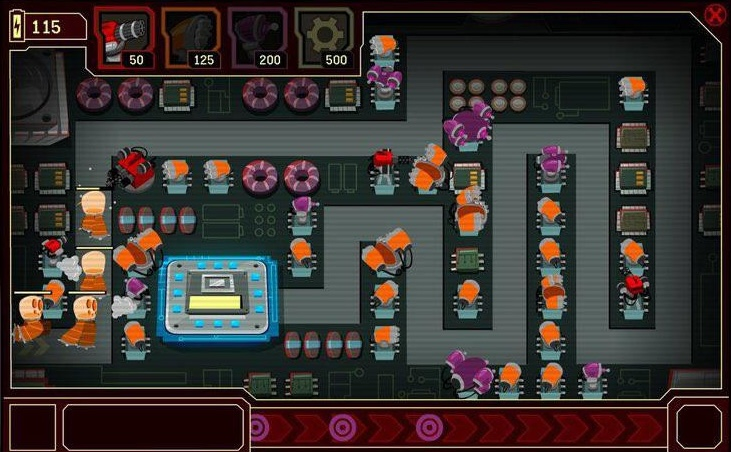

About Me
Favorites
Hobbies
Favorite Video Games
Through the Years
About Me
Hi, I'm Daniel. I am a Korean-American from Massachusetts, attending the University of Maryland. I am a Computer Science and Mathematics double major, in my third undergraduate year.I have been coding for a long time, starting with basic block coding on Scratch with my best friend in 5th grade. I went on to take all of the computer science courses offered at my high school, learning foundational skills such as HTML, Python, Java, OOP design, and more. I even earned a 5 on my AP Computer Science A exam!
I decided to continue my pursuit of computer science at UMD with a specialization in cybersecurity.
At UMD, I am part of the Sigma Phi Delta Engineering Fraternity where I served as the treasurer of the 2025 Executive Board. Being treasurer taught me many invaluable skills such as teamwork, communication, and leadership.
I am also part of the App Development Club where I served as a DevOps Engineer for the Children's National Hospital project. My team's product was an MRI scan analysis web application that harnessed machine learning to give valuable insights into scans of the brain, revealing tumors and other anomalies.
The University of Maryland and SigPhi are my happy places, and I love all of my friends and acquaintances who make every day worth it :D
Why Cybersecurity
My first interest in cybersecurity I can recall was when I was just 6 years old. In the popular flash game Club Penguin, there was a mini game called "System Defender".System Defender was a tower defense game and a security system for the Elite Penguin Force. The objective was simple: place defensive turrets to kill "bugs" before they reached the mainframe computer.

I loved the defensive aspect of the game — how the turrets at
the front whittled down the adversaries and the turrets in the
back picked off any bugs that got through, creating a
beautifully layered defense.
Another game where I find defense very satisfying is Rocket
League. The game is very easy to understand. It is soccer but
you're a flying car. In this game, defense is typically
structured as two layers: a 1st man and a 2nd man.
This system works similarly to that of System Defender from
Club Penguin. The first defender acts as a nuissance to the
opponent, either disarming the ball or forcing it into the
next line of defense. The second defender cleans up anything
that manages to squeak through.
I have always loved the satisfaction of defense. I even played
as a defenseman in ice hockey for 10 years of my life,
disarming opponents, blocking shots (ouch), and progressing my
team out of the defensive zone.
So it only made sense to choose cybersecurity as a career with
my passion for defense and computers. Like 6 year old me, who
fell in love with System Defender, I still find beauty and
elegance in defensive systems to this day. From video games to
real world cybercrime, I not only want to build strong
defenses, but I wish to protect civilians in the online world
that is the Internet.